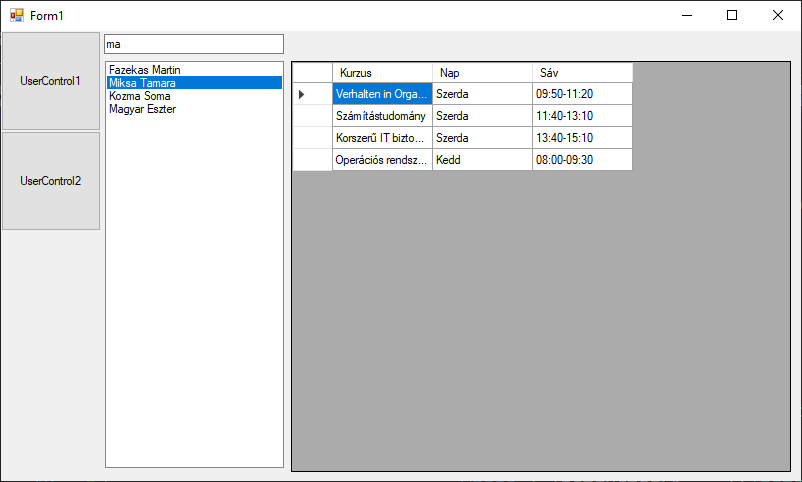

11. gyakorlati feladatsor: LINQ lekérdezések a Studies adatbázis táblaira
A feladat háttere
A gyakorlat célja olyan kliens építése, mely LINQ-lekérdezések segítségével szűri és jeleníti meg egy adott tábla tartalmát. A mintafeladat egy tanszék óráit tartalmazó adatbázis köré épül.

Az Instructor tábla az oktatókat tartalmazza, az oktató státusza (Pl: Adjunktus, Docens, Egyetemi tanár, stb.) idegen kulcsként van tárolva, akárcsak az Emplolyment (Pl: Főállású, félállású, óraadó). A Lesson tábla a saját kulcsa mellett csak idegen kulcsokat tartalmaz. Itt kerül tárolásra, hogy milyen tantárgyból melyik oktatónak a hét melyik napján, melyik sávban és melyik teremben van órája. Cousre például a szoftvertechnológia, amiből van 7 Lesson egy héten.
A cél kliens felület építése, mely kétféle nézetben teszi lehetővé az adatbázisban tárolt adatok megjelenítését. A nézetek között gombokkal lehet választani.
- Az egyik nézet egy listában megjeleníti az oktatókat, és a kiválasztott oktatónak listázza az óráit, de úgy, hogy az idegen kulcsok helyén a csatolt táblában szereplő érték jelenjen meg. Az oktatók név szerint szűrhetők az oktatók listája felett lévő szövegdobozban.
- A másik gombhoz tartozó nézetben kurzusonként lehet megtekinteni az órákat.

Gyakorlati feladatsor
1. Projekt létrehozása és elnevezése
(+/-) Hozz létre egy Widows Forms App típusú projektet
2. Adatbázis felépítése és ORM
Az adatbázis csak az egyetemi IP-tartományból vagy egyetemi VPN-el érhető el!
| Szerver | bit.uni-corvinus.hu |
| Felhasználónév | hallgato |
| Jelszó | Password123 |
| Adatbázis | Studies |
(+/-) telepítsd az adatbázis eléréséhez szükséges NuGet csomagokat, majd készítsd el az ORM osztályokat!
Hogy ne húzzuk az időt, alant a parancs:
Scaffold-DbContext "Data Source=bit.uni-corvinus.hu;Initial Catalog=Studies;Persist Security Info=True;User ID=hallgato;Password=Password123;TrustServerCertificate=true" Microsoft.EntityFrameworkCore.SqlServer -OutputDir Models
3. Felhasználói felület
Hozd létre a fenti ábrán látható felületet az alábbi lépésekben!
(+/-) A Form1-en hozz létre két gombot és egy Panel-t! A Panel-t tervező nézetben a Toolbox-ból behúzhatod. A gombok fogják a UC-ket cserélgetni a paneleken, így tud majd a felhasználó váltogatni a nézetek között.
(+/-) Állítsd be a panel horgonyait (Anchor a Properties panelen) úgy, hogy a panel kövesse az ablak méretét.
(+/-) Adj a projekthez két UserControl-t is UserControl1 és UserControl2 néven. Az UserControl-ok háttérszínét tervezőből állítsd különbözőre, hogy könnyen ellenőrizhető legyen a funkciók működése.
(+/-) A két UserControl a panelba kerüljön bele. Hozzál létre eseménykiszolgálót a gombok kattintás eseményéhez.
(+/-) Az esemény-kiszolgálókban hozd létre a gombhoz tartozó UserControl-t, majd add hozzá a panelhez úgy, hogy töltse ki a rendelkezésére álló területet (a UserControl Dock tulajdonságának DockStyles.Fill értékre történő beállításával). Az esemény-kiszolgálóban még a UserControl létrehozása előtt töröljük a panel korábbi tartalmát, végül adjuk a Panel Controls gyűjteményéhez a UserControl-t.
Dock: Az objektum szülőobjektumához való illeszkedését határozza meg. Így oldható meg legegyszerűbben, hogy a panel átméretezésével a benne lévő UC mindig vegye fel a panel méretét.
◯ Példaként az első gombhoz tartozó eseménykiszolgáló:
private void button1_Click(object sender, EventArgs e)
{
// Kitöröljük az összes vezérlőt a panelről
panel1.Controls.Clear();
// Létrehozzuk az 1. UserControlt
UserControl userControl1 = new UserControl1();
// Hozzáadjuk a panelhez.
panel1.Controls.Add(userControl1);
// Dock: Az objektum szülőobjektumához való illeszkedését határozza meg
// DockStíle.Fill: A vezérlő mind a négy oldala illeszkedjen (és méreteződjön) a szülőobjektumhoz.
userControl1.Dock = DockStyle.Fill;
}
(+/-) Az ábrán látható TextBox, ListBox és DataGridView vezérlőket az egyik UserControl-on helyezd el (a Toolboxról behúzva)! A továbbiakban az első UserControl-ra dolgozz!
4. UserContorl1: Oktatók lekérdezése

4.1 Lista feltöltése az oktatók neveivel
Fel kell tölteni adattal a listBox1-et az alábbiak szerint:
(+/-) Példányosítsd a context-et az osztály szintjén!
LINQ: a .NET keretrendszerbe épített lekérdező nyelv (szabálygyűjtemény), amely rendelkezik a hagyományos lekérdező nyelvek (pl.: MSSQL) funkcionalitásának egy részével, egyszersmind integrálva van a programozási nyelvekbe (C#, VB).
(+/-) Az alábbi egyszerű lekérdezéssel, melyet a konstruktorban vagy a Load eseményhez tartozó eseménykiszolgálóban is elhelyezhetünk, megkapjuk az Instructor tábla tartalmát. A LINQ eredményét adjuk meg a listBox1 adatforrásaként:
var ilist = from i in context.Instructors
select i;
listBox1.DataSource = ilist.ToList();
(+/-) Ahhoz, hogy a listBox1-ben csak az oktatók neve jelenjen meg, be kell állítani a lista DisplayMember tulajdonságát. Ezt a kódban az alábbi utasítás végzi el:
listBox1.DisplayMember = "Name";
Warning
A DisplayMember értékét pontosan kell megadni, különben nem fog működni! Be kell gépelni. Ha rosszul van megadva, vagy nincs megadva a DisplayMember, a tábla sorait leképező osztály neve jelenik meg annyiszor, ahány eleme van az adatforrásul szolgáló gyüjteménynek. Kerülőút, ha a "fülén" keresztül állítjuk be az adatforrást, és BindingSource-on keresztül kötünk. Ekkor a Properties panelen a DisplayMember tulajdonság legördíthető, és tervezőből is kiválasztható a listában megjelenítendő tulajdonság.
4.2 Oktatók szűrése névre
A cél az, hogy ahogy a felhasználó gépel, úgy szűküljön az oktatók listája.
A LINQ lekérdezésekben az SQL nyelvekhez hasonló módon lehet WHERE záradékokat írni. Az oktatók lekérdezéséhez használt lekérdezést az alábbi módon átalakítva a textBox1-be beírt szöveg alapján szűrve kerülnek az oktatók nevei az adatforrásba. Az alábbi kódrészletet a textBox1 TextChanged eseményéhez létrehozott eseménykiszolgálóban célszerű elhelyezni:
listBox1.DataSource = (from i in context.Instructors
where i.Name.Contains(textBox1.Text)
select i).ToList();
A Contains() helyett használható még a StartsWith() metódus is, ha csak név eleji egyezésekre akarunk összpontosítani.
listBox1.DataSource = (from i in context.Instructors
where i.Name.StartsWith(textBox1.Text)
select i).ToList();
Ahhoz, hogy a lekérdezés szűrő jellege ténylegesen működjön, nem elég a konstruktorból meghívni. Szervezd ki a lekérdezést és az adatforrás feltöltését egy külön metódusba, amit aztán hívj meg a konstruktorból és a textBox1 TextChanged eseményéhez rendelt eseménykezelőből is!
Megoldás:
public UserControl1()
{
InitializeComponent();
FillDataSource();
listBox1.DisplayMember = "Name";
}
private void FillDataSource()
{
listBox1.DataSource = (from i in context.Instructors
where i.Name.Contains(textBox1.Text)
select i).ToList();
}
private void TextBox1_TextChanged(object sender, EventArgs e)
{
FillDataSource();
}
4.3 A kiválasztott oktató óráinak lekérdezése
(+/-) Rendelj eseménykezelőt a listBox1 SelectedIndexChanged eseményéhez! Az eseménykezelőben kérdezd le egy változóba kiválasztott oktató rekordját:
Instructor instructor = (Instructor)listBox1.SelectedItem;
vagy
Instructor selectedInstructor = listBox1.SelectedItem as Instructor;
Mivel a ListBox1 adatforrása Instructor típusú elemekből álló gyűjtemény, bisztosak lehetünk benne, hogy a kiválasztott elem is Instructor típusú, vagy null, ha épp nincs semmi kiválasztva.
Éppen ezért előtte illik ellenőrizni, hogy van-e egyáltalán kiválasztott oktató, vagy esetleg túl jól sikerült a szűrés :)
if(listBox1.SelectedItem == null) return;
Instructor selectedInstructor = listBox1.SelectedItem as Instructor;
(+/-) Ezt a rekordot felhasználva megírható egy lekérdezés, ami visszaadja az adott oktató tanóráit. A Lessons tábla azonban kizárólag idegen kulcsokat tartalmaz. Így a pontos értékek megjelenítéséhez a táblák összekapcsolására (INNER JOIN) lenne szükség. A LINQ ennél egyszerűbb lehetőséget is ad a táblakapcsolatokon keresztüli lekérdezésekre:
var lessons = from l in context.Lessons
where l.InstructorFk == selectedInstructor.InstructorSk
select new
{
Kurzus = l.CourseFkNavigation.Name,
Nap = l.DayFkNavigation.Name,
Sáv = l.TimeFkNavigation.Name
};
A select után a new kulcsszó a három lekérdezett mezőt egy úgynevezett „névtelen típusú” objektumba gyűjti össze a fenti utasítás. A megfelelő kapcsolt táblákon keresztül hivatkozva pedig az idegen kulcsok helyett az egyes értékekhez tartozó neveket is meg tudjuk jeleníteni.
Ugyanerre használhatsz lambda kifejezést is ha akarsz, kinek mi áll kézre:
var lessons2 = context.Lessons.Where(l => l.InstructorFk == selectedInstructor.InstructorSk)
.Select(l => new
{
Kurzus = l.CourseFkNavigation.Name,
Nap = l.DayFkNavigation.Name,
Sáv = l.TimeFkNavigation.Name
});
(+/-) Töltsd be a LINQ-lekérdezés eredményét a dataGridView1-be! (Állítsd be a dataGridView1 adatforrását!)
dataGridView1.DataSource = lessons.ToList();
5. UserControl2: kurzusok óráinak lekérdezése
(+/-) A második UserControl felületén valósítsd meg a fent leírt szerkezetet, de most a kurzusok jelenjenek meg a ListBox-ban, és az adott kurzus órái legyenek a DataGridView-ban! Próbáld az alábbi megoldás használata nélkül megvalósítani a funkciót!
Megoldás
public partial class UserControl2 : UserControl
{
StudiesContext context = new StudiesContext();
public UserControl2()
{
InitializeComponent();
FillDataSource();
listBox1.DisplayMember = "Name";
}
private void textBox1_TextChanged(object sender, EventArgs e)
{
FillDataSource();
}
private void listBox1_SelectedIndexChanged(object sender, EventArgs e)
{
if (listBox1.SelectedItem == null) return;
Course course = listBox1.SelectedItem as Course;
dataGridView1.DataSource = (from l in context.Lessons
where l.CourseFk == course.CourseSk
select new
{
Nap = l.DayFkNavigation.Name,
Sáv = l.TimeFkNavigation.Name,
Oktató = l.InstructorFkNavigation.Name
}).ToList();
}
private void FillDataSource()
{
listBox1.DataSource = (from c in context.Courses
where c.Name.Contains(textBox1.Text)
select c).ToList();
}
}
6. Oktatók adatainak megjelenítése és mentése
(+/-) Készíts UserControl-t, ami az oktatók adatait jeleníti meg, de az idegen kulcsok helyén a csatolt táblákban szereplő vontkozó szövegek jelenjenek meg!
(+/-) Készíts gombot, amely CSV állományba menti az oktatókat!
7. Új kurzus rögzítése
(+/-) Készíts UserControl-t, ami a kurzusok adatait jeleníti meg! Új kurzust Ok és Mégse gombot tartalmazó felugró ablakból lehessen rögzíteni!
8. Egyéb feladatok
(+/-) Egészítsd ki az előző feladatokat úgy, hogy a rácsok és a listák alatt jelenjen meg egy cimkében, hogy éppen hány rekordot taralmaznak!